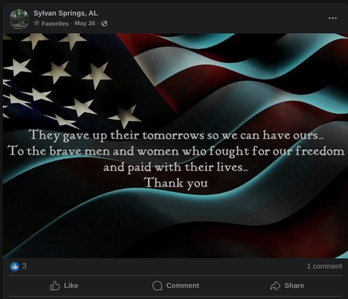
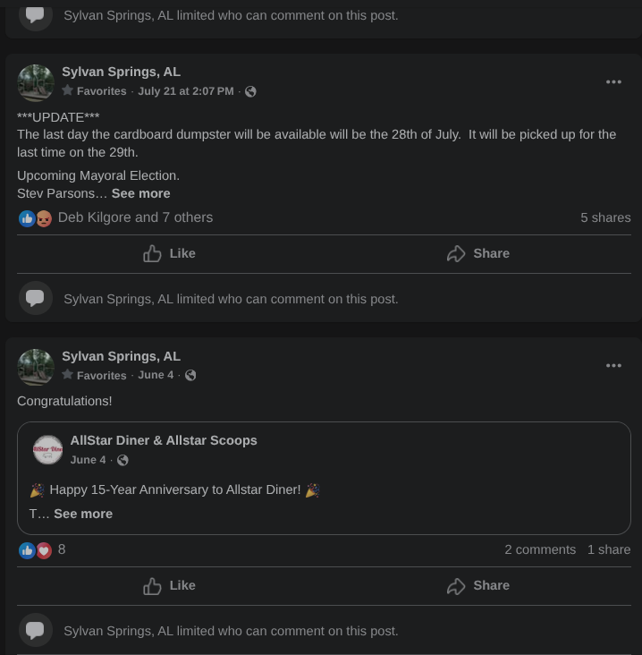
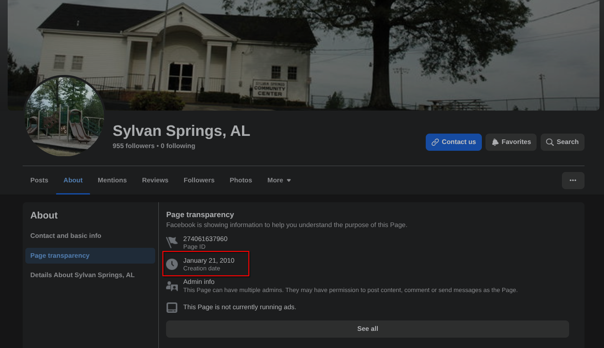
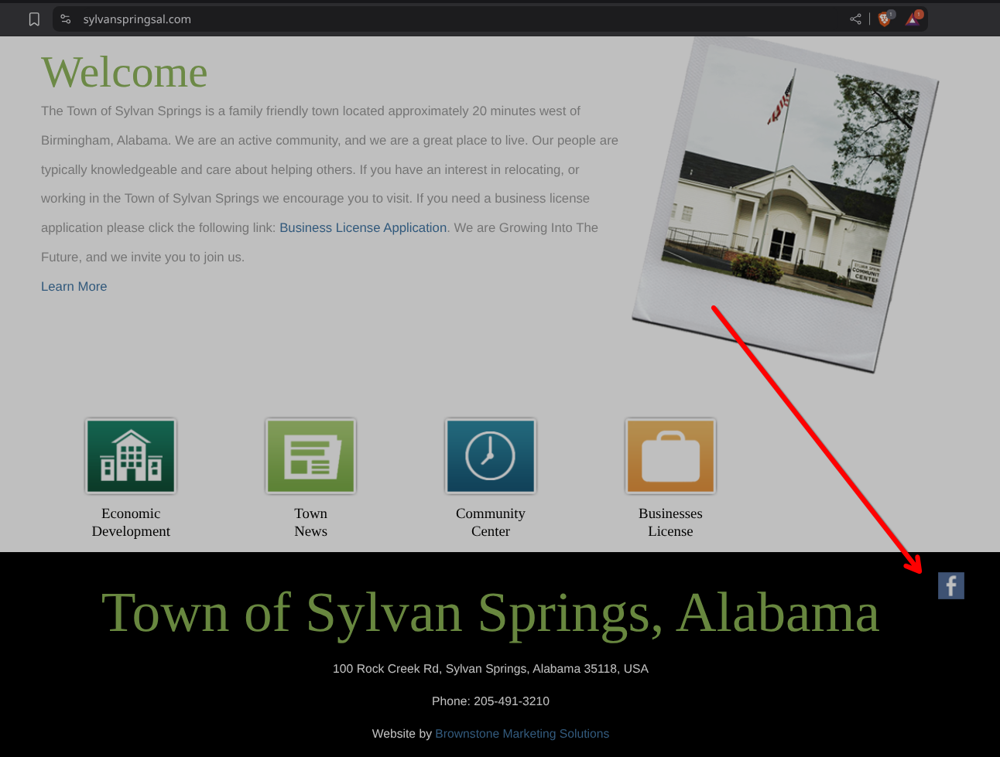

1st Amendment in the Digital Age, for Towns
Sylvan Springs Shuts Down Public Comments on Facebook ahead of Election, Raising First Amendment Concerns
Original Story: June 4, 2025
Updated with Followup: July 30, 2025
For clarity, updated with neutrality note, added more opinion about 1A: July 31, 2025
The Town of Sylvan Springs, Alabama, has recently disabled public comments on its official government Facebook page, a move that has sparked concerns about our First Amendment rights to free speech and to petition the government. The decision coincides with a post on June 4, regarding All-Star Diner. This is important because now, we are coming up on the first contested public election in 20 years. This brings into question potential legal implications of continuing to silence public discourse.
Before Comments Disabled: May 26, 2025

After Comments Disabled: June 4, 2025

Background: A Quiet Town Faces a Rare Election, Timing in Question
Mayoral Candidate Aaron Wheeler had discussions with town staff on June 19, 2025, just before the June 24 deadline.
The problem is, some of the private Sylvan Springs social media groups are administered by those who have been known to shut down a few commentors, based solely on being supportive of one candidate or another. The only outlet which would have remained content-neutral, the official Sylvan Springs page, is the one that shut comments down.
Neutrality Note: As the author of this article, I treated the interviews with Aaron and Stev neutral. Afterwards, like many of you, I now can't be neutral, but I want to give people things to really think over. Think strategically, not in terms of who we like, because every vote changes the future.
Sylvan Springs, a small community in Jefferson County, has not held a contested municipal election for more than 20 years, with many local officials being appointed or running unopposed for years. However, the emergence of a new candidate for the upcoming election has brought renewed attention to the town’s political landscape, and with it, sparking discussion on social media with a bit of fiery passion in the "What's happening in Sylvan Springs" group on Facebook, despite both candidate being somewhat conservative leaning and similar intentions for governance. Based on this, the town’s decision to restrict public comments on its official social media platform deserves scrutiny.Key question: Will the citizens of Sylvan Springs be ok with their current government deciding that the citizens might make the wrong choice when they go vote? What else is going on here?
The town’s Facebook page, used to share updates on local government activities, events, and policies, had previously allowed residents to post comments.
July 30, 2025 Followup Investigation - A surprising and disturbing response.
As citizens, we have a right to know and even criticize officials, and that's protected by the first amendment as journalism. As part of the election, we did an interview of both Aaron Wheeler and Stev Parsons, asking questions as to how far they would support our citizens 1st Amendment rights. Aaron's response was clear and strong, but in our talks with Stev, he seemed hesitant to fully extend acknowledgment of those rights to government-run digital forums/platforms, despite recent SCOTUS rulings on this topic.
We followed up today, to see if we could get more information on this, after we were told by Mayor Stevan Parsons and his wife that turning comments off was a council decision and should be in the meeting minutes. Previously, we had pegged this on a date before town officials knew that Aaron Wheeler was running, based on available information publicly posted. If this occurred later, this does bring some questions as to the timing to the forefront.
When I made contact with Matt Kinder, Town Clerk today, I had asked him if he would be able to release the minutes of the meeting where this had occurred. To that question, he answered that he cannot, because the minutes have not been approved yet. My followup question was, which meeting did this decision happen, to which he answered that it was the most recent (July 2025) meeting.
The previous response from Mayor Parsons's team and now Mr. Kinder, when compared with the dates on the Sylvan Springs official Facebook page, shows us that the timing closely correllates to the town preparing for an election, which is problematic and may still constitute an effort to stop election discussions on a government run public forum, which SCOTUS has ruled has the same protections. When I asked Mr. Kinder if he remembers discussion on the reasoning as to why this was done, he said that he didn't recall why.
We were in contact with both Stev and Jennifer Parsons on this privately, and in those exchanges, we expressed the Constitution issues that shutting down a forum has, including the potential for an outsider or a citizen to use that issue to bring costly litigation and civil judgments against our town, taking money from important infrastructure fixes, maintenance, and other benefits to Sylvan Springs citizens. The response from Mrs. Parsons was she was sure the attorney reviewed the decision, and likewise Mr. Kinder told me the town attorney(s) reviewed it and gave an opinion that this action was legal. It was said by a couple of town officials, that if it's "the town's" (government) Facebook page, that they can shut it down for everyone if they want to, as long as it's content neutral. The problem is, attorneys generally don't have the authority to overrule the Supreme Court of the United States, as there is plenty of case law on this now, as recent as 2024.
Mrs. Parsons, in a couple of emails with us, also questioned whether the Facebook page is actually official or authorized by the town. She said ultimately that they would have to review the minutes on whether it is official or not. However, whether in the minutes or not is not a great litmus test as to whether it is official government. There are two problems: 1. This Facebook page has been used to disseminate town information to citizens for over 10 years, and 2. If this was not official, it would not have been included as a link (F symbol) on the official town website, which the town pays Brownstone Marketing Solutions for, at the bottom of the page.
The previous Town Clerk, Amy Shaddix's email is still on the Intro page, and this page has been used by representatives of the Town of Sylvan Springs, as far back as its inception on January 21, 2010. It is not uncommon in local government, for a town clerk to establish and/or run a social media page. This would have been far less problematic if comments were disallowed from the beginning, or if there was a request for comment. In this case, it was said that the council asked for comment, but realistically, the council meetings usually have under 10 (non-government) citizens, if not less than 5 present.

Here is where the town website shows a link to the Facebook page, consistent with sources like Internet Archive, on sylvanspringsal.com.

First Amendment Implications - A Legal Nightmare
The First Amendment to the U.S. Constitution protects the rights to free speech and to petition the government for a redress of grievances, rights that courts have consistently upheld as essential to democratic governance. When government entities, such as the Town of Sylvan Springs, create public forums for citizen engagement—such as the interactive comment sections of an official social media page—they are subject to First Amendment scrutiny.
Legal precedent supports the view that government-operated social media pages constitute public forums. In Davison v. Randall (2019), the Fourth Circuit Court of Appeals ruled that the interactive portions of a public official’s Facebook page are considered a public forum, and blocking or restricting users based on their viewpoints violates the First Amendment. Similarly, in Knight First Amendment Institute v. Trump (2019), the Second Circuit held that public officials cannot block critics from their social media accounts when those accounts are used for official purposes, as this constitutes viewpoint discrimination.
By disabling all comments on its Facebook page, Sylvan Springs has effectively eliminated a designated public forum, raising questions about whether this action constitutes an unconstitutional restriction on free speech. The timing of the decision—being close to the election registration deadline/election season—might lead people to speculate that the move was intended to suppress criticism or limit public debate.
There are individuals who test our Constitutional rights in the halls of government for a living. They often call themselves, First Amendment Auditors, and you can find their video in many places on Youtube. There are a lot of opinions, both positive and negative toward these individuals, but one thing is clear: they are winning in court, and municipalities are often on the wrong side of the law, based on recent rulings. Whether you like or dislike First Amendment Auditors, these individuals are adept at finding holes in government compliance to our most basic Constitutional rights. This is why it is vital that public officials have a good education as to how the law applies to their position and how they handle the public.
Legal Issues at Stake
The blanket disabling of comments, rather than selective blocking or deletion of specific posts, presents a complex legal question. While courts have ruled that public officials cannot engage in viewpoint-based discrimination (e.g., deleting comments or blocking users because of their opinions), completely shutting down a public comment section may be viewed as a content-neutral restriction. However, such restrictions must still meet constitutional standards, including being narrowly tailored to serve a significant government interest and leaving open alternative channels for communication.
In Lindke v. Freed (2024), the U.S. Supreme Court established a two-part test to determine when a public official’s social media activity constitutes state action subject to First Amendment constraints: (1) the official must have actual authority to speak on behalf of the government, and (2) they must purport to exercise that authority when posting. The Court emphasized that public officials retain their own First Amendment rights to curate personal social media accounts, but when a page is used for official business, it becomes subject to constitutional protections.
In Sylvan Springs’ case, the Facebook page is clearly designated as the town’s official platform, used to communicate government announcements and solicit public feedback. By shutting down comments entirely, the town may be attempting to avoid viewpoint discrimination claims by silencing all speech, but this action could still be challenged as an overbroad restriction that limits citizens’ rights to criticize the government or petition for change. Courts have consistently held that the First Amendment protects the right to criticize government officials, particularly in public forums.
Impact on Public Discourse and Democracy
The decision to disable comments has significant implications for democratic engagement in Sylvan Springs. Social media platforms have become critical tools for local governments to communicate with constituents, particularly in small towns where other forums for public discourse may be limited. In some local social media groups, administrators may not be neutral, and may unfairly limit commenter engagement when it doesn't benefit their favorite candidate. By the town closing the official avenue for dialogue, the town has effectively silenced residents who rely on the official Facebook page to stay informed, raise concerns, or hold officials accountable.
Public discourse is a cornerstone of democratic elections, and limiting opportunities for residents to discuss candidates, policies, or government performance could undermine the democratic process. Residents are now left with fewer avenues to engage with their government, potentially discouraging political participation and transparency.
This is where the free press aspect of the first amendment is so very important. When the corporate media, government shuts down on citizen's free expression, the citizen then can become "the press."
Opinion
It is the opinion of the author, that any official who has an issue respecting the most basic rights of citizens should be shown the door. Many officials take an oath of office, which includes upholding the US Constitution and State of Alabama Constitution, without favor. However, when questioned, they have real trouble naming the 5 elements of the 1st Amendment. I talked to Matt Kinder a little more on July 31st, and Matt Kinder's credit, he knows the elements, and has been very easy to work with to get info on the town's rich history for a digital archive project, for Sylvan Springs history.
Officials following and understanding these things has been a growing problem, impacting not just mayors, clerks, but police officers whose job on a daily basis is entirely based first in our Bill of Rights first, and US/AL code second.
The idea of silencing ideas we don't like is an unfortunate relic of the 1990s/early-2000s, where churches were advocating for abolishing secular music, and more. As a Christian, I realize that if we desire to seek truth, we can't silence discussion because that's often an important step in seeking truth - even if that truth isn't the one we wanted.
We need to get past this point in our society where we pretend to be patriotic, while we are willing to sacrifice the rights of a neighbor, for our own comfort/to not be offended. It is a problem, when our town officials are not fully supportive of citizen's rights which have been a 200 year tradition, because it may be YOU who need to exercise those rights in your darkest hour.Here's what our forefathers, our judges, and our literary geniuses have to say about this:
“Congress Shall Make No Law Respecting an Establishment of Religion, or Prohibiting the Free Exercise Thereof; or Abridging the Freedom of Speech, or of the Press; or the Right of the People Peaceably to Assemble, and To Petition the Government for a Redress of Grievances.”—First Amendment
“Whoever would overthrow the liberty of a nation must begin by subduing the freeness of speech.”—Benjamin Franklin
“If large numbers of people believe in freedom of speech, there will be freedom of speech, even if the law forbids it. But if public opinion is sluggish, inconvenient minorities will be persecuted, even if laws exist to protect them.”—George Orwell, author, c. 1945
“If there is a bedrock principle underlying the First Amendment, it is that the government may not prohibit the expression of an idea simply because society finds the idea itself offensive or disagreeable.”—Supreme Court Justice William J. Brennan, Jr., Texas v. Johnson, 491 U.S. 397 (1989)
“Indeed, perhaps we do the minors of this country harm if First Amendment protections, which they will with age inherit fully, are chipped away in the name of their protection.”—Judge Lowell A. Reed, Jr., American Civil Liberties Union, et al. v. Janet Reno (No. 98-5591)